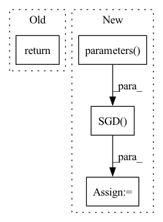

Pattern ID :28449
Before Change
)
classifier = PredictionHead(cfg.DATASET.NUM_CLASSES, cfg.CNN.OUTPUT_SHAPE)
return nn.Sequential(context_cnn, classifier)
After Change
classifier = PredictionHead(cfg.DATASET.NUM_CLASSES, cfg.CNN.OUTPUT_SHAPE)
net = nn.Sequential(context_cnn, classifier)
optim = torch.optim.SGD(
net.parameters() , lr=cfg.SOLVER.BASE_LR, momentum=cfg.SOLVER.MOMENTUM, weight_decay=cfg.SOLVER.WEIGHT_DECAY
)
model = CNNTransformerTrainer(model=net, optim=optim.state_dict(), cfg=cfg)
return model, optim
In pattern: SUPERPATTERN
Frequency: 4
Non-data size: 4
Instances Fragment ID: 84208272
Project Name: pykale/pykale
Commit Name: 87a2deef0835f53ddf25dba3cf7f312e04d0b31b
Time: 2023-03-29
Author: 93381130+HaolinWang2001@users.noreply.github.com
File Name: examples/cifar_cnntransformer/model.py
M Class Name: AnonimousClass
N Class Name: AnonimousClass
M Method Name: get_model(1)
N Method Name: get_model(1)
M Parent Class:
N Parent Class:
M File Name: examples/cifar_cnntransformer/model.py
N File Name: examples/cifar_cnntransformer/model.py
M Start Line: 99
M End Line: 100
N Start Line: 104
N End Line: 110
Before Change
def __new__(cls, **kwargs):
x = super(Optimizer, cls).__new__(**kwargs)
return x.optimizer
def create_loss_function(type):After Change
if self.type=="RMSprop":
self.optimizer=torch.optim.RMSprop(self.classifier.parameters(), self.learning_rate)
if self.type=="SGD":
self.optimizer= torch.optim.SGD(self.classifier.parameters() , self.learning_rate)
return self.optimizer
def create_loss_function(type): Fragment ID: 84208269
Project Name: radtorch/radtorch
Commit Name: 74eba02269194c439ff9240c292170a18abc83c0
Time: 2020-04-06
Author: elbanan@users.noreply.github.com
File Name: radtorch/test.py
M Class Name: Optimizer
N Class Name: Optimizer
M Method Name: __new__(1)
N Method Name: __new__(1)
M Parent Class:
N Parent Class:
M File Name: radtorch/test.py
N File Name: radtorch/test.py
M Start Line: 81
M End Line: 82
N Start Line: 64
N End Line: 74
Before Change
print("epoch", epoch, ":", loss.item())
return ann
def test(ann):After Change
optimizer = torch.optim.Adam(model.parameters(), lr=lr,
weight_decay=args.weight_decay)
else:
optimizer = torch.optim.SGD(model.parameters() , lr=lr,
momentum=0.9, weight_decay=args.weight_decay)
for epoch in range(args.E):
cnt = 0
for (seq, label) in Dtr:
cnt += 1 Fragment ID: 84208270
Project Name: ki-ljl/fedavg-numpy-pytorch-tff
Commit Name: 81ddcb66553dfbf12ad249af37c295376953f44e
Time: 2022-03-03
Author: lijunliang.ki@gmail.com
File Name: algorithms/fedavg-pytorch.py
M Class Name: AnonimousClass
N Class Name: AnonimousClass
M Method Name: train(3)
N Method Name: train(1)
M Parent Class:
N Parent Class:
M File Name: algorithms/fedavg-pytorch.py
N File Name: algorithms/fedavg-pytorch.py
M Start Line: 150
M End Line: 171
N Start Line: 135
N End Line: 166
Before Change
print("Client[{}] Traning. Epoch {}/{}, Loss {:.4f}, Time {:.2f}s".
format(id, epoch + 1, epochs, loss_sum,
time() - time_begin))
return SerializationTool.serialize_model(model)
def train(self, model_parameters, epochs, lr, batch_size, id_list, cuda):
Train local model with different dataset according to id in id_list.After Change
SerializationTool.deserialize_model(self._model, model_parameters)
epochs = 5
criterion = torch.nn.CrossEntropyLoss()
optimizer = torch.optim.SGD(self._model.parameters() , lr=0.1)
self._model.train()
for _ in range(epochs):
Fragment ID: 84208271
Project Name: smilelab-fl/fedlab
Commit Name: 16befdf9173a4b4f4430f456b5353765c6d4d3e3
Time: 2021-08-08
Author: 928255708@qq.com
File Name: fedlab/core/client/serial_trainer.py
M Class Name: SerialTrainer
N Class Name: SerialTrainer
M Method Name: _train_alone(4)
N Method Name: _train_alone(8)
M Parent Class: ClientTrainer
N Parent Class: ClientTrainer
M File Name: fedlab/core/client/serial_trainer.py
N File Name: fedlab/core/client/serial_trainer.py
M Start Line: 102
M End Line: 137
N Start Line: 98
N End Line: 119